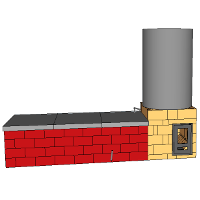

Les plans
Notre objectif est de développer puis de publier les plans d'une série de modèles standards couvrant les différentes puissances/fonctions permises par les poêles de masse.
 Sidewinder 6700W |
 Cuisinière maçonnée |

Sidewinder bidon |
|---|
Cliquez sur une case pour voir la ficher du poêle correspondant.
Remarques générales
Licence :
Les plans que vous trouverez sur cette page et sur ce site sont distribués librement, sous une licence open-source CC BY-SA 4.0 : vous êtes libres de partager, d'utiliser, de transformer ce travail, même pour une utilisation commerciale tant que vous citez les auteurs originaux et que vous partagez les résultats de votre travail sous les mêmes conditions.
La construction d'un poêle de masse implique de nombreuses compétences et, bien que nous tentions de fournir les informations les plus claires possibles, nous ne pouvons garantir la réussite de votre construction. Nous ne donc saurions être tenus responsables de tout dommage, matériel ou immatériel causé à vous ou à vos équipements.
Matériaux et fournisseurs :
Les briques réfractaires à 40% d'alumine ainsi que le mortier réfractaire à l'argile (appelé coulis) utilisés pour ce poêle proviennent du briquetier PRSE (Produits Réfractaires du Sud Est).
Les vitres réfractaires de 4 mm d'épaisseur utilisées pour les portes vitrées peuvent être commandées chez INSERT-GLASS.
La peinture utilisée pour la métallerie est la laque mate à l'eau, teintée en noir, de Nature et Harmonie.
La cheminée interne est faite sur-mesure en laine céramique (1400°C) moulée sous vide par le fabricant belge QUINSIS. Nous organisons des groupements d'achat pour ce produit.
Construction :
Le débit des briques est donné en considérant que la plupart des chutes sont réutilisées. Il donc très important de :
- Découper les briques en partant des plus grandes. Une partie des chutes résultantes seront réutilisées.
- Découper sur le trait de coupe pour que l'épaisseur de la lame soit répercutée des deux cotés.
- Prévoir une marge d'au moins 5% sur les briques pour anticiper les erreurs de coupe.
Sidewinder standard de 6700W
Ce modèle standard est un poêle de masse dont le coeur de chauffe est un batchrocket. Par rapport aux batchrockets classiques, la cheminée interne de ce modèle est déportée sur le coté (d'où le nom de Sidewinder).
La première cloche et le coeur de chauffe sont entièrement en briques réfractaires à 40% d'alumine. La deuxième cloche est un banc de chauffe qui peut être réalisé en briques de terre crue.

Vue 3D du poêle avec banc de chauffe.
Fiche technique :
- Puissance : 6700W avec 2 flambées par jour
- Poids (sans le banc de chauffe) : environ 1050 kg
- Dimensions : 77x83 cm au sol et 172 cm de haut
- Version : 2
- Date de publication : 22 Juin 2017
- Fichier Sketchup : SIDEWINDER_STANDARD_6700W_V2.skp
- Débit : debit_sidewinder_standard_6700W_V2.txt
- Manuel en .pdf : MANUEL_sidewinder_standard_6700W_V2.pdf
Usage :
Ce poêle est destiné au chauffage de grands volumes ou de volumes mal isolés. Le four noir en haut à gauche du poêle atteint 500°C pendant la flambée et la température diminue par la suite jusqu'à la prochaine flambée. Le foyer est aux alentours de 350°C après la flambée, ce qui en fait aussi un excellent moyen de cuisson.
Remarques :
Ce poêle est actuellement en usage chez des membres de l'association Humus sapiens Pays d'Oc.
Cuisinière maçonnée de 1500W
Ce modèle standard reprend la traditionnelle cuisinière à bois en fonte. C'est un modèle purement expérimental pour l'instant puisqu'il n'a pas encore été construit et testé dans la réalité.
La tôle en acier qui sert de plancha devrait permettre de faire plus de trois flambées par jour sans diminution notable du rendement, chose impossible avec les poêles de masse entièrement en briques. Il est donc probable qu'il pourra être utilisé dans des maisons demandant une puissance de chauffe de 3000W, sous condition de faire 4 flambées par jour dans les périodes les plus froides.

Vue 3D de la cuisinière maçonnée.
Fiche technique :
- Puissance : 1500W avec 2 flambées par jour
- Poids : environ 700 kg
- Dimensions : 98x55 cm au sol et 95 cm de haut
- Version : 1
- Date de publication : 29 Juillet 2017
- Fichier Sketchup : cuisiniere_1500W_V1.skp
- Débit : debit_cuisiniere_1500W_V1.txt
- Manuel en .pdf :
Usage :
Ce poêle est destiné au chauffage de petits volumes ou de volumes bien isolés. Le four noir et le foyer permettent tous deux la cuisson de plats.
Le clapet de démarrage s'actionne depuis la face avant du poêle. En position verticale, les gaz doivent descendre jusqu'en bas du poêle pour y trouver l'ouverture de la cheminée externe. Ils remontent ensuite pour sortir par cette cheminée. En position horizontale, le clapet crée une ouverture dans cheminée externe, ce qui permet au gaz de sortir plus chauds et donc d'augmenter le tirage du poêle. De manière générale, les clapets de démarrage sont très utiles :
- En été, lorsque la maison est plus froide que l'air extérieur
- En intersaison en cas de tirage trop faible voire de refoulement
- En cas de cheminée non isolée ou mal conçue
Remarques :
Le poêle est maçonné sur une base de 5 cm d'épaisseur de béton cellulaire (commercialisé sous les marques Ytong ou Siporex) pour qu'il n'y ait pas de diffusion de chaleur par le bas.
La cheminée externe visible en haut à gauche est un tube rond soudé en acier de 168 x 4,5mm. On peut y emboiter une conduite de cheminée standard de 153 mm de diamètre.
Il est très important que la plancha ait un disque de dilatation pour éviter qu'elle ne se déforme sous l'influence de la chaleur. Souder des cornières par dessus n'est PAS suffisant.
Une évolution possible pour ce poêle serait d'y intégrer un système de chauffage d'eau en y plaçant :
- Soit un échangeur tubulaire (inox annelé de 25 mm de diamètre par exemple)
- Soit un compartiment en inox sous le niveau de la plancha avec une ouverture de remplissage par le dessus et un robinet en partie basse pour avoir de l'eau chaude directement.
Images :


À gauche, vue de coté; à droite, vue de l'intérieur sans la plancha.